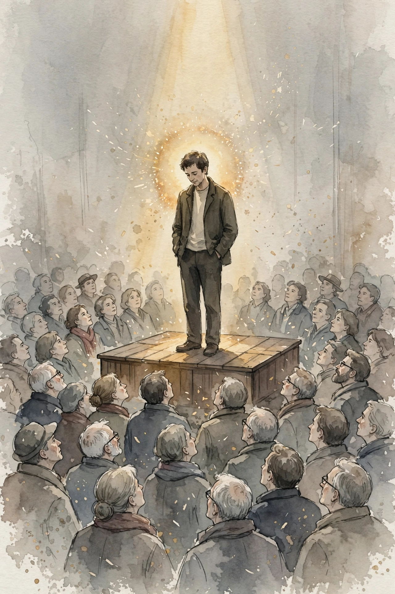

PsycHacks · Dating Instruction · Episode 1 · Companion
Only four ways:
How to meet women
Dr Orion Taraban ranks the only four ways to meet women, from the easiest and thinnest returns to the hardest and richest, and shows why most men starve three of the four. This companion follows the full episode, section by section.
Illustration. Four paths from one crossroads: the app, the street, the circle, the stage. AI-generated watercolor, made for this page. No text appears in the image.
Reading guide. Each nugget separates SOURCE FACT (what Taraban said) from INTERPRETATION (why it matters, the transferable principle). Charts name their source line. Figures he states appear exactly as he states them.
Watch. The official episode video. Use the chapter menu above to jump to any section of this companion as you listen.
The Wisdom Index: every nugget in this companion
Part 1
The Four Pathways
Dr Orion Taraban opens with a clean frame. There are only four ways to meet women today, and they are also the only four ways to meet men. The pathways are the same for both sexes. The challenges inside each one differ sharply.
there are only four ways to meet women today
Orion Taraban, PsycHacks · Episode transcript, opening
The four: dating apps, cold approach, social circle, social media. He ranks them from the easiest, fastest, and least successful to the hardest, slowest, and most successful. A path that is easy, fast, and highly successful would "break the sexual marketplace", in his words.
That calibration is the thesis of the whole talk. Reward tracks effort. There are no real shortcuts. The best case is to run all four at once, because most men suffer by leaning on one path, usually apps, to the exclusion of the other three.
Nugget 1 · The calibration principle
Calibrated effort
Source fact. Taraban ranks four pathways from easiest, fastest, least successful to hardest, slowest, most successful, and notes a path that is easy, fast, and highly successful would break the sexual marketplace.
Interpretation: why it matters. Men misprice the paths. They pick the cheapest one and expect the dearest result. The rank order tells you where to put marginal effort.
Interpretation: the principle. Match the size of the effort to the size of the prize. When a path feels too easy for its promised reward, the reward is the lie.
The four pathways, ranked
Hover any bar for detail. Taraban gives an ordinal ranking, not scores. The bars below encode his stated order from least to most effort and reward.
Source: episode transcript, opening. Interpretation: bar lengths encode his ordinal rank only. Taraban states no numeric scores.
Part 2
Dating Apps: Easy, Fast, Thin Returns
Apps seduce because they make rational sense. They are convenient, cheap, low risk, and largely passive. A man can start free in about 20 minutes and, with the right system, build a steady pipeline in a couple of weeks.
The catch is the success rate. For the average man it is very low. Taraban draws two bright lines. At 8 or above in pure physical attractiveness, especially face, a man can clean up on the apps regardless of money or status. Below 6, he argues, a man will see no appreciable success. Filters add a second tax: under 5 foot 7 or over 50, and the algorithm barely shows the profile to women while still showing women to him, which feeds false hope.
The deeper point is about systems. Average men who swipe at random end up frustrated, demoralized, and hopeless. The app is not the strategy. A correct system for engaging the technology is the strategy, and most men never build one.
Nugget 2 · Apps
Apps punish the average man without a system
Source fact. Taraban states men need roughly 6 of 10 in looks for appreciable app success, 8 or above to clean up, and notes height and age filters quietly remove many profiles from view.
Interpretation: why it matters. Random swiping converts a low-yield channel into an emotional tax. The demoralization is the product working as designed, not a personal verdict.
Interpretation: the principle. Never enter a filtered marketplace without a system. If you cannot beat the filter, change the channel.
Part 3
Cold Approach: The Confidence Skill
Taraban treats cold approach like hunting or self defense: a core male capability. It carries two clear edges. First, you see the woman and know you feel attraction, which no profile photo can fake. Second, you get direct access here and now, to a woman who may never appear on apps, in your circles, or in your messages.
The liabilities are real. You cannot tell if she is available. She will be at her most guarded with a stranger. You get judged on a snap read of your presentation. And it frightens most men, which is why they need a system and some accountability to push through the fear. He puts the number plainly: a few hundred approaches before a man starts to feel remotely confident, and even the best in the world convert at rates that read like baseball batting averages.
Most men approach about ten times a year, which he calls above average, then wonder why nothing compounds. Ten swipes a year would yield nothing either. The payoff for those who persist is not just dates. The skill itself gives "a plus 10 boost to their overall confidence", in his phrase, which then raises success everywhere else.
Nugget 3 · Cold approach
Cold approach is a confidence skill
Source fact. Taraban states men need a few hundred approaches to feel confident, top performers still strike out more than they hit, and most men attempt around ten approaches a year.
Interpretation: why it matters. Ten reps a year is not a strategy, it is a wish. Skill lives on the far side of a volume most men never reach.
Interpretation: the principle. Pick the skill with the steepest confidence dividend and pay for it in reps. The dates are the byproduct. The confidence is the asset.
Part 4
Social Circle: Slow, Safe, High Stakes
This is how people used to meet: friends, college, church, work. It is the safest bet for long term relationships because vetting happens slowly, over group outings and long exposure. You know what awaits inside, and the connection has time to root before dating starts.
The costs are steep. It takes at least six months to make a new friend or feel belonging in a new place, and only with real effort. Optionality shrinks to whoever is in the room. Rejection here is brutal, because a no can warp the dynamic at work, church, or school, retroactively and going forward, with gossip as the garnish.
Status rules this channel, and status is contextual. You can be the top dog in one group and the low man in another. His term for the winning position is "contextual alpha": the group formally or informally looks up to you as its leader. Without that standing, he advises, find a different scene, or better, build a new scene around yourself.
Part 5
Social Media: The Long Game With the Highest Ceiling

Illustration. The halo effect: when millions know your face, recognition does the approaching for you. AI-generated watercolor, made for this page. No text appears in the image.
Taraban calls social media far and away the best way to meet women at present, and also the slowest to pay. The most beautiful and desirable women are not on the apps, not at the dive bar, and not in your small circle. They are on social media. If you want to catch a certain type of fish, you go where they swim.
The mechanism is attention. Contrary to popular belief, he argues, "the most reinforcing resource to a woman" is not money or power. It is attention, and the ability to command it makes a man magnetic. Wealth and status are hard to read at a glance. A European noble in plain clothes is invisible. Fame is not. When millions know your face, you become recognizable in a way richer and more powerful men are not, and the halo effect can make an otherwise ordinary looking man highly desirable.
fame is a force multiplier for men in the game of meeting and dating
Orion Taraban · Episode transcript, social media section
The honest caveats close the talk. Most channels go nowhere, and the ones that work take years of steady effort. His numbers: only 6 percent of YouTube channels pass 100,000 subscribers, against 51 million total channels, which he renders as roughly 300,000 successful creators. Note the arithmetic: 6 percent of 51 million is 3.06 million, ten times his spoken figure. The point stands either way. Rare, but not impossible. Men also face a steeper climb than women here, because male reputations grow through visible competence, and competence takes years to build before the first video ships.
Nugget 4 · Social media
Attention is the currency
Source fact. Taraban argues attention, not money or power, is the most reinforcing resource to a woman, and that fame acts as a force multiplier that makes a man recognizable and desirable.
Interpretation: why it matters. Invisible value does not date. The market prices what it can see, so the work is to become legible, not just worthy.
Interpretation: the principle. Build in public. Competence that nobody witnesses is a private hobby. Competence that thousands witness is a dating asset.
How rare is a breakout channel
Hover any bar for detail. Taraban states both the percentage and a headcount. The headcount does not match the percentage.
Source: episode transcript, social media section. Honesty note: 6% of 51 million equals 3.06 million, not the roughly 300,000 Taraban states aloud. Both figures are shown so the reader can see the gap.
Close
The Close: Run All Four
Taraban ends where he began. Success calibrates to time and effort. Fast and easy paths pay thin. Slow and effortful paths pay rich. The failure mode is not the choice of the wrong path. It is the choice of one path, usually the app, while the other three starve. The move is to work all four at once, each at the effort level its reward justifies.
Takeaways
- Four paths exist: apps, cold approach, social circle, social media. Rank them by effort and reward, then fund each accordingly.
- On apps, the average man needs a system, not more swipes. Without one, the channel taxes morale instead of producing dates.
- Cold approach is a volume skill. A few hundred reps buy confidence, and the confidence compounds everywhere.
- In social circles, status is contextual. Become the contextual alpha of the room, or build a new room.
- Social media has the highest ceiling because attention is the currency. It also demands years, so start now.